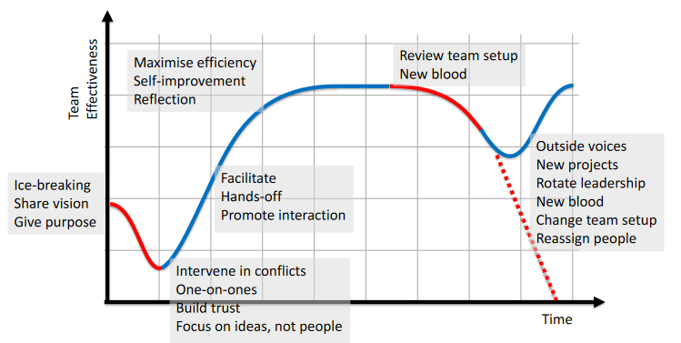

**BOOK.** PMBOK (Project Management Book of Knowledge)
Project management, to use a cyclic definition, is about managing projects. A balancing act.
It is about making plans, managing costs and deadlines.
A project is constrained by the **iron triangle** (right). You can hover on these images if they're unfigured
I.e. your project can be up to 2 of good (big scope), quick (big time), or cheap (big cost [saving]), but not all 3.
Depending on where your customer priorities are on that triangle, you do what you do.
**The triangle is rigid and non-negotiable**, no matter what the customer says.
There are higher level "shapes" that you can get by adding more points, such as the "Titanium tetrahedron" (+quality), "hard hexagram" (+risk, resources), and the "difficult dodecahedron" (+procurement, stakeholders, communication, integration).
They tried really hard with the shape names, but fundamentally there are 10 knowledge areas for PM:
* Scope
* Time
* Cost
* Quality
* Risk
* Resources
* Procurement
* Stakeholders
* communication
* Integration.
These are formalised in PMBOK, and like good business people, abbreviated to **KA**s.
PMBOK by the project management institute is a PM framework.
A project is split into 10 **KA**s (as above), and 5 process groups (**PG**s). Get used to the acronyms; as we mentioned this is not a business module /s
5 times 10 makes ... 49 individual **processes** (yes I know)
The five PGs, or *stages*, are:
1. **Initiation** -- business case (why do the project?)
2. **Planning** -- Balancing time, cost, scope, risk...
3. **Execution** -- Doing
4. **Monitoring/Controlling** -- making sure progress is made/project on track
5. **Closing** -- delivery and reflections.
And thus the 49 processes are given as follows:
Individual Processes. (Ian Saunders)
### Initiation
The **Project Mandate** (or statement of work) is a document that details
* What the project is exactly,
* The scope of the project,
* Any constraints,
* Any assumptions,
* Any known risks/issues.
The **Business case** is a justification of why the project should be done, what benefits it gives, etc, etc, as well as the timeline.
In the "Initiation" stage, we take the project mandate and business case, and **develop a project charter**.
We also identify stakeholders.
The ***Project charter*** formally authorises the start of the project.
It requires:
* Project mandate,
* business case,
* agreements and contracts,
* quality standards,
* and organisational processes and lessons learned from previous projects.
Outputs are different from outcomes are different from benefits.
**Outputs** detail what is produces, **Outcomes** detail immediate effects, and **benefits** detail what good those effects do for the company/client.
Objectives should be **SMART**. That is, Specific, Measurable, Achievable, Relevant, Time-bound.
### Stakeholders
Stakeholders are anyone with involvement in the project.
This includes the sponsor, customers/users, sellers, partners, HR, etc, etc.
Stakeholders can be put in a power-interest grid, based on Interest in the $x$ axis, and Power/Influence in the $y$ axis.
Power/Interest grid (Ian Saunders)
### Project Plans
This is where the appointed project manager takes over.
Planning is continuous.
To make a plan, we must
* break down work required and timeline
* set out milestones and bottlenecks
* plan the budget and allocate resources.
We can also go back and iterate on these points.
This falls under the "Planning" PG of PMBOK.
### Work Breakdown Structure (WBS)
And we say this isn't a business module.
A WBS is a way **manage scope**. By decomposing the package into **deliverables**.
Work breakdown structure (Yijun Hu)
It is structured in a tree that breaks down a project into deliverable stages (and not processes!)
From the top level project, we can decompose it into different **components** (top yellow)
These components decompose into **work packages** (bottom yellow), and these work package decompose into **subtasks**.
A **work package** (WP) is a mostly self-contained task, with clearly defined interactions and objectives. It can be thought of as the smallest whole unit to a WBS.
Each work package can be thought of as its own milestone.
The sizes of the work packages can vary, with different benefits and downsides.
* A **small** WP is more able to be estimated and can be more easily worked on in parallel, but means there are more inter-WP interactions, they may be harder to define, or there may be duplication of work between WPs.
* A **large** WP can make more efficient use of and easier to manage your team (as small WPs = micromanaging), but are harder to break down and has greater risk of overrun. Also, you can't micromanage as much.
A WBS is deliverable based -- that is, it relates to **work** rather than **purpose** (which would be objectives based).
It details WHAT, and not WHY or HOW.
This makes them easier to estimate and to manage scope properly, but it may lose sight of objectives, and restricts creativity, and does not consider processes.
*We want to stay focused on objectives:* can break the runes of WBS a bit, and break down logically process-wise.
*We want to plan schedule and budget:* can annotate that on after on the WBS
*We want to encourage creativity:* This is a you problem (as the PM), and not a WBS problem.
### Time Management
We want to estimate the duration of each of our activities.
* We can use **analogy**, seeing how long a similar project took, adjusted to these conditions.
* **Parametrics**, doing the same but with statistical models,
* **Team based**, ask your team who are doing the work, or
* we can pretend this is more mathematically rigorous than it actually is by using the **Three-Point method**:
Given a mean (estimated time) $m$, a minimum $a$, and a maximum $b$, there are two functions we can use to estimate time:
\begin{align}
t_\rm{triangular} &= \fr{a+m+b}{3} \\
t_\rm{beta} &= \fr{a + 4m + b}{6}
\end{align}
We then need to **sequence** these activities to try to parallelise.
This is invariably done using a **gantt chart**!
A Gantt Chart (Ian Saunders)
The gantt chart shows task duration, and you can draw arrows to show dependencies.
You can even partial-fill in the bars to show progress.
We can also show dependencies using a **project network diagram (PND)**, a graph which you then use critical path analysis on.
There are two ways of representing it: either activities on nodes, or activities on edges. Personally I find the former easier.
Two ways of doing project diagrams. (Ian Saunders)
The **critical path** is the path from start to end, where none of the activities can be delayed without delaying the final ending time of the project.
There are six properties:
* **Duration** $D$: The duration of the activity
* **Earliest start** $ES$, earliest time the activity can start -- the latest $EF$ from all its parents
* The **earliest finish** $EF = ES + D$
* The **latest finish** $LF$, the latest time the activity can finish without delaying project -- the earliest $LS$ from its children
* The **latest start** $LS = LF - D$
* The **total float** $TF$, which is the amount of delay time for the activity until the project is delayed.$TF = LS - ES = LF - EF$.
**Free float** is the amount of delay time until the *following activity* is delayed. $FF \leq TF$.
The critical path analysis method goes as follows:
1. Construct the diagram. Mark on all the durations.
2. Go **forward** through the graph. Mark $ES = \max_{EF}($immediate parents$)$, and $EF = ES +D$.
4. It can be helpful to make the "end" node an activity, with 0 duration. Then mark $LS = LF = EF$.
3. Go **backward** through the graph, and mark $LF = \min_{LS}($immediate successors$)$, then $LS = LF - D$, then $TF = LS - ES$.
The **critical paths** are the paths from start to finish, where all floats are **zero**.
**Drag time** is the amount of time a critical task holds up the project. i.e. it is the amount of time its duration needs to be reduced by, to make it no longer critical. This is either the **duration** $D$, or the **minimums of floats** $\min(TF)$ of parallel tasks, whichever is **lower**.
**Crashing** is forcibly reducing an activity's time to speed up the project. This really only has to be done on the critical path.
### Program Evaluation and Review Technique (PERT)
A modification on the regular duration measures, to allow for pessimistic and optimistic time estimates.
Using the triangle and beta distributions (pictured right).
As a reminder, given the most likely time $m$ (previously used for $D$), the shortest estimate $a$, and the longest estimate $b$,
The mean
\[
\begin{align}
t_\rm{tri} &= \fr{a+b+m}{3} & t_\beta &= \fr{a+4m+b}{6}
\end{align}
\]
The variance
\[\begin{align}
\sigma^2_\rm{tri} &= \fr{a^2 + b^2 + m^2 - ab - am - bm}{18} &
\sigma^2_\beta &= \left( \fr{b-a}{6} \right)^2
\end{align}\]
Thus rather than using a fixed duration, we use three durations $a, m, b$.
Then, for critical path we can work out the mean $t$ and variance $\sigma^2$
PRINCE2 was developed for IT projects, which don't usually manage the traditional way. It is generic, and comes with a lot of paperwork.
It is a **product-based planning** methodology, focusing on deliverables and products.
Opponents say that is inflexible, bureaucratic, and only suitable for large projects.
Get ready for a lot of businessy sounding titles:
***The seven princples of Prince2.***
1. **Continuous business justification** (is there still a benefit, is it still viable)
2. **Learn from Experience**
3. **Defined roles and responsibilities**
4. **Manage by stages** (break down project)
5. **Manage by expectation** (Set limits, and allow people to work by themselves within those limits )
6. **Focus on products** (what, not how and why)
7. **Tailor to suit project environment** (If it isn't convenient don't follow this methodology as written.)
***The seven processes of Prince2.*** Corresponds to the process groups of pmbok. And to be extra businessy, they each have their own acronym.
1. **SU.** Starting Up
2. **DP.** Directing a project
3. **IP.** Initiating a project
4. **SB.** Managing a stage boundary
5. **CS.** Controlling a stage
6. **MP.** Managing product delivery
7. **CP.** Closing project
PMBOK PGs to Prince2 Processes (Ian Saunders)
One notable thing is that directing DP has no equivalent in pmbok.
We can alter the pmbok diagram into the prince2 diagram, and add in DP to get the diagram.
Notice how at every stage, directing is done from the project board.
Every single thing can be communicated with and fed back from the board -- probably too micromanaging for some people's tastes.
### Roles
The project team compromises a **project board**, and a **project manager**.
The **board** is a panel that represent stakeholders, such as the business, the end-user, and people doing the work. They are held accountable for the project's success.
The **project manager** does the day-to-day management, and takes authorisation from the board. They need approval to change plan beyond agreed limits.
Further beyond the board you get the *sponsor*: the entity that commissions, funds, audits, etc. the project.
### Everything Else (themes, etc.)
Had enough of sevens? Tough!
Here are the **seven themes of prince2**:
* The **business case.** is it feasible, desirable, and achievable?
* **Organisation.** responsibilities and accountabilities.
* **Quality.** and meeting requirements
* **Risks.** identify, assess, and control
* **Plan.** what, when, how, who
* **Change.** reacting and adapting
* **Progress.** everything progressing as intended?
Prince2 produces **Management products**, which are about as stuffy as they sound.
These include things like
* **Records** such as logs, registers
* **baselines** such as the approval documents, initiation documents, management strategies, and various plans
* **Reports** during stage boundaries, and for changes and exceptions.
**Business case** makes the **business case outline** as well as the **business case** itself, and continuously assesses the viability and justifiability of the project. Things are formally verified by the project board for each key decision.
**Organisation** makes the **project management team structure**, creating tables showing who's accountable for what.
**Plans** come in many varieties, including overall **project plan**, **initiation plan** (plan for the plan), **next stage plan** (plan each stage in turn), **team plan** (for WPs), and **exception plans** (for when things go wrong.)
**Quality** focuses on products. We make the **project product description (PPD)**, which talks about deliverables and customer expectations; the **quality management strategy** about standards and procedures; the **product description**, and the **quality register** for all "quality events" planned and undertaken.
**Progress** measures against the project plan. This produces **progress reports** and **exception reports**
**Risk** needs to identify risks, assess their impact, plan against them, implement plans, and communicate this to relevant parties. It makes the **risk register**.
**Change** is about managing by exception. Once we capture an issue, we need to examine (assess impact), consider options, decide whether or not to escalate (-> exception report), and take corrective action. This makes the **issue register** and **issue reports**.
Overall diagram of processes and relevant plans (Ian Saunders)
This is why opponents say it's inflexible and paperwork heavy.
### Budgeting
A **budget** is an *estimate* over a *period* of costs, revenues and resources.
PMBOK cost -> planning.
Plan cost management, estimate costs, determine budget, control costs.
Estimating:
* Consider cost per unit time
* Cost per use (venue, cleaning, etc)
* Cost per material consumption (cost per brick, etc)
Can use
* Via *analogy*, how much it cost last time, adjusted for context
* *Parametric*, analogy with a stats model applied
* Via *experts*
* Via *team members*, since they are doing all the work.
Can put into a three point *a, b, m* model.
Must consider
* *Vendor bids*: compare competitive bids from vendors, should settle on a sensible price, but:
* *Cost of (poor) quality*: Failure and poor quality can cost more over the lifetime.
* Management and contingency *reserves*, for just in case.
### Monitoring / Measuring
Cash may not always be easily accessible. Insufficient to just know how much, but also *when*. Considering
* Staggered fund incomes
* Invoicing (when people need to be paid)
* Paying for materials.
Cash can be *scheduled* like anything else.
A project often has most activity in the middle. Thus expense over time often forms a bell curve, or a cumulative S-curve.
The **Performance Measurement Baseline (PMB)** is a time-phased plan of costs.
The cumulative curve is the value curve - the **planned value (PV)** of a project is how much budget has been **assigned** towards that period of time. I.e. the value of the cumulative graph at that time.
The **Actual Cost (AC)** is what's actually spent. This can be analysed against the PMB. If we're below, either (a) we're under budget, nice, or (b) we're running late.
**Earned Value (EV)** is what proportion of the plan value has actually been achieved - a half finished house of 100k is 50k EV. Indicator of progress measured in units of money.
The **Budget at Completion (BAC)** is what the whole project is planned to cost (the PV at the end of the project)
BAC curve (Ian Saunders)
**Earned Value Analysis (EVA)** is can be to evaluate a budget. Calculating these variables give a picture of a project *at a given time*
***YOU HAVE TO REMEMBER THIS***
Variable
Formula
*Budget at Completion* $BAC$
just the budget; precalculated
*Planned Value* $PV$
$BAC \times \%planned$. Budget cost of work scheduled at that time.
*Actual Cost* $AC$
measured
*Earned Value* $EV$
$BAC \times \%done$. Cost of work performed.
*Schedule Variance* $SV$
$EV - PV$. Are we on schedule or not
*Cost Variance* $CV$
$EV-AC$. Are we on budget or not
*Schedule Performance Index* $SPI$
$\frac{EV}{PV}$. Are we working quickly enough
*Cost Performance Index* $CPI$
$\frac{EV}{AC}$. Are we working cost-effectively enough
*Cost Schedule Index* $CSI$
$SPI \times CPI$. Overall efficiency.
$SV < 0$: not on schedule. $CV <0$: overbudget. And vice-versa.
Read Vertically to read over budget and under budget in units of money. Horizontally we can read this in units of time.
What we're doing is asking will the work be finished on time. This is a *forecasting* question, asking about the future. To do this, we need to make assumptions: constant rate of work? Constant rate of resource consumption? How do we measure percentage-done?
### Forecasting
We want to estimate an end date and end project cost.
The **Estimate at Completion (EAC)** is the estimated final total cost, can get by:
1. Assume the original plan is well planned and just take that.
2. Assume performance to date (cost efficiency) is consistent, and extrapolate based on this.
3. Assume both cost- and schedule-efficiency is good to extrapolate from.
Ex. We have a planned delivery of 6 thing, and at this point we've done 2 thing but need 3 thing.
Examples of different estimations (Ian Saunders)
However this fucks up if the WPs are not uniform (like above) and are then not done in-order. Thus we like WP to be uniform.
**EVA Forecasting** gives us some more variables to work with
***YOU HAVE TO REMEMBER THIS***
Variable
Description
Formula
Estimate at completion $EAC$
est. cost on progress, est. of final total cost
$\fr{BAC}{CPI}$
Est. cost on original estimation
$AC + (BAC - EV)$
Est cost on overall efficiency
$AC + \frac{BAC-EV}{CSI}$
Estimate to complete $ETC$
est. remaining cost of work, how much left to spend
$EAC-AC$
Variance at completion $VAC$
deviation from budget, expected overspend/savings
$BAC-EAC$
To-complete performance index (Estimated) $TCPI_{EAC}$
cost efficiency required to achieve EAC
$\frac{BAC-EV}{EAC-AC}$
To-complete performance index (Planned) $TCPI_{BAC}$
cost efficiency required to achieve **B**AC
$\frac{BAC-EV}{BAC-AC}$
### Why projects fail
Why projects fail:
* Bad requirements
* **Stakeholders** not involved
* Insufficient resources
* Expectations too high
* **Support from above** insufficient
* Requirement change, scope change
* Bad planning
* Bad **management**s
A project is successful if it gives a *benefit* to its stakeholders - whether that be cold hard capitalism or something else.
We can look at **key performance indicators (KPI)**, which are high level measurable metrics, that correlate to stakeholder objectives, such as
* % tasks complete / tasks on todo list
* Customer satisfaction / stakeholder satisfaction
* Budgetary constraints
* Return on investment / £££££££
### Lean
With how "hip" mystifying Japanese words is in the west, be prepared for some Japanese buzzwords! Being able to read 漢字 some of these buzzwords are genuinely painful.
**Lean** is a manufacturing methodology developed by Toyota.
It is based on (again) seven principles:
* Empower the team
* Build integrity in
* See the whole
***Waste.*** There are three types of waste described:
* 【無理】Muri, **Overburden**, talking about overwork and unsustainability. Working people into the ground and machines until they break.
* 【無駄】Muda, **Uselessness/Wastefulness**, talking about activities that do not provide value.
* 【斑】Mura, **Unevenness**, talking about irregularity in work, variability in flow and throughput.
These can appear in many areas, such as: transport, inventory, motion (between steps), waiting (on things), overprocessing, overproducing, defects, (lack of) skills
#### The Lean House
The lean house (Ian saunders)
Efficiency, production, minimise waste. Fundamental to the lean house:
Goal: highest quality, low cost, short lead time
Pillar: Just in Time - last minute pull system
Pillar: Jidoka - improving process through automation
Foundation: Heijunka, Kaizen - standardized work
*Just in time.* Pull rather than plan in advance
【自働化】*Jidoka.* Evolve towards automation - and self-monitoring automation. Stop on faults and intelligent intervention.
【平凖化】*Heijunka.* Production levelling, smooth even batches
【改善】*Kaizen.* Continuous improvement; reducing waste
#### 5 pillars of lean *thinking*
Of (Womack and Jones 1995)
1. Identify **value**. value created by producer, can only be defined by ultimate consumer
2. Map **value stream**. work out how value gets from here to customer
3. Create **flow**. (Heijunka)
4. Establish **pull**. (JIT)
5. Seek **perfection.**
The **minimum viable product** (MVP) is the bare essentials: useful and workable as a product but *no more than the bare essentials*.
This can then be iterated on later, and make the customer feel as if they have got their money's worth.
This especially represents the theme of deliver fast.
### Kanban Development
***Kanban.*** 【看板】, lit. *Look-board*, is the central part of the methodology of the same name.
Kanban methodology is a "**Work-in-progress Limited Pull System**". Make *what's needed* rather than making extra just in case.
It is **just-in-time**, meaning there's very small buffers ("regulators") between steps, and everything is done last-minute, on demand. Much like coursework
The central part of kanban, as the name implies, is the board; To use the [pleonasm](https://en.wikipedia.org/wiki/Pleonasm#Foreign_words), the **Kanban board**.
Kanban (wikipedia)
Each column is a step of the process, and the idea is that people pull from previous columns. Kanban boards can also be limited so only $n$ number of items can be in each column at a time, to prevent overburden.
Kanban is WIP:
* Work in progress
* Forces team/individual to work on limited number of tasks.
* Reduces overburden and overhead of task switching (difficult to switch focus) and its waste
* "Leaner to finish one thing rather than doing 2 things to 50%"
It is a pull system:
* Start new work only when there's *demand*. Don't overproduce.
* No to-do list, work overload, complete one thing, pull the next.
* Team focuses on *prioritising*, and not planning.
To migrate to Kanban, Start with what you do now, pursue incremental, evolutionary change, respect current conventions, encourage at all levels.
Visualise workflow, and limit work in progress. Make sure nothing gets blocked.
When one section has nothing done, and another section is waiting on things to do, this is **blocked flow**.
#### Blockers and Idlers
Being *blocked*, waiting on someone else. You're then *idle*, and not having work to do. There is then a waste of time.
IRL, most people just work on something else (but this is very naughty and not lean)
【改善】Improvement:
* Regular, incremental imrpvements, to all processes and at all levels.
* Try to engage all employees, have a culture where everyone is actively engaged in self-improvement. People trust that they can talk to anyone at any level.
* Trust, respect, and empower people. Events focused on improving company.
【平準化 Heijunka】Production *levelling*
* Uneveness (mura) leads to waste (muda)
* Smaller, more regular batches achieves steady flow to next stage, greater predictability, and flexibility to changing demand.
In a kanban once the person has idled, they can use the idle time to look at the process, and where the system flow can be improved.
Because it's a pull system, no requirement for synchrony. Each team focuses on getting value through flow, but kanban doesn't solve resource utilisation.
#### Lean Principles for Software Dev
Toyota's lean principles translate 1:1 to software.
Waste though is less physical and more digital and in performance. Since software is not manufacturing.
Kanban is meant to be pull (doing is limited) -- but typically people push onto the todo list - overburden, and hard to flow.
Typical board is (Todo) (Doing) (Done)
Can expand doing into something like (Design)(Implement)(Test)(Validate), to help visualise flow.
But there's no signalling.
Can break each section into then (Doing | Done), then someone can take from the done pile. "Not my to-do list, someone else's done list"
But load-balancing, balancing workload etc etc might become hard. So you can make the board even more complex.
Can have flow lanes: high priority / mid priority / blocked, etc.
### Waterfall
Waterfall is the "good old method" that no one ever properly does because it's too inflexible.
See [CS261 Explanation for more details.](../cs261/#dev-1)
This section will be very short.
### Agile
[See this font](https://www.sansbullshitsans.com/), though unfortunately it catches less than would be ideal.
Also [see CS261](../cs261/#dev-3).
Agile is the "hip" one. It describes a class of methodologies. It:
* focuses on requirements over methodologies
* fixes budget and time, and estimates scope -- thus risking scope over risking budget or time (unlike waterfall which fixes scope)
* iterative development
* gradual progress
* risk declines the more progress you make.
[Agile has a manifesto](https://agilemanifesto.org/), which values:
* individuals > processes
* working software > extensive documentation
* customer involvement > contract negotiation
* responding to change > sticking to a plan
#### Scrum
***Scrum.*** is an agile methodology.
We define **"user stories"** of what a user wants to do, and group them into "epics" of stories.
These stories are often of the form
> As a [some user] I want [some goal] so that [some reason]
We can then add priorities, and estimation of size and effort, as well what counts as done.
Every iteration is a **sprint** of 1-4 weeks, and in each sprint we pick the most important user stories to do.
Scrum has several roles,
* The **product owner** that represents stakeholders, communicates what they want for the project (in user stories), and gives priorities to the team.
* The **development team** a small team of 3 ~ 9 full-stacking the whole process
* The **scrum master*, a "servant leader" that makes sure everything runs smoothly and keeps communications, hosting meetings, etc.
Scrum values "commitment, courage, focus, openness, respect"
Every day there is a quick **Daily Standup,** a daily meeting in scrum/agile between the team, talking about problems and what we've done, and about the *artefacts:*
An **artefact** is a product or a thing that is produced. Like "management products" but less bureaucratic.
These include user stories, tasks, product backlog, sprint backlog, product increment, extensions.
One can use a **burndown chart** to show the remaining effort of the sprint, and shows progress.
Burndown chart (Ian saunders)
The daily standup might not work so well - if people get anxious/not listening & thinking abt what to say, etc, etc. Unless teams very open/relaxed/etc (big *if*), very difficult. If people have all said, then they tune out and are bored.
Thus, lots of scrum teams have a task board (kanban board), and talk about what's on that.
#### Scrum vs Kanban
Scrum: 5 values, do team stuff. Using sprints to do stuff. Iterations, servant leader, empowered team.
Kanban: kanban board. Continuous flow, pulling, lean
Scrum:
* Work comes in substantial chunks that can be broke down
* Work forms part of bigger long term goals
* Regular fixed timeboxes that allow monitoring rate of progress
Kanban:
* Work comes in small discrete pieces (like tickets)
* No overall long-term objective
* Planning is irrelevant
Risk Management
### Contents
1. [Introduction](#risk-1)
1. [Risks in Technology Development](#risk-tech)
1. [Risk Identification and Management](#risk-manage)
### Introduction
**Risk** is the effect of uncertainty on objectives.
There are many ways to deal with risk;
* avoid doing it
* removing the risk source
* change likelihood, or consequences
* share risk around
* give up and accept it
* increase risk for better reward.
**Uncertainty** is something not definite. This can be in time, in cost, quality, health & safety, etc.
An **issue** is what arises if a risk materialises.
There are different attitudes to risk, from **risk-averse** to **risk-seeking**.
Different methodologies have different approaches to risk:
* PMBOK has a specific risks KA, to avoid missing risk.
* Prince2 has a board of directors, and avoids the risk of losing control, of failure to meet expectations
* Agile with iterative avoids the risk of delivering wrong things and benefits from opportunities from customer engagement
* Lean avoids the wastes, and takes all opportunities to maximise value.
### Risks in Technology Development
In tech development, there are many risks.
* Risks from the **user**: resistance to change, conflicts, negative attitudes towards project, lack of commitment/cooperation.
* From the **team**: inexperience, lack of specialised skills.
* From the **organisational environment**: change in management, corporate politics, unstable environment, acquisition by Elon Musk.
* From **planning and control**: lack of effective management and monitoring, poor planning, bad estimation of resources, unclear milestones, ineffective communication.
* From **system requirements**: continuously changing, unclear and ambiguous *cough* 261 2022/23, or even just incorrect.
* From **complexity**: from new tech, incomplete tech, or just technical complexity of project.
Each of these can be solved by various methods, such as
* use agile
* use agile
* prince2?
* use agile
(There's kinda a reason why agile was invented in the first place)
Technology innovation is bumpy, and one must overcome the bumps to see it succeed.
The "trough of sorrow" (Paul Graham)
Of course, it may still just crash at any time, even if you've stabled out.
Such is risk.
### Risk Identification and Management
***Responsibilities.***
Assign accountabilities beforehand. Thus, you know who to blame when things go wrong.
A **Responsibility Assignment (RACI) Matrix** is not a somewhat inappropriate matrix, but rather a table to assign roles and responsibilities of each WP.
Records who is **R**esponsible, **A**ccountable, **C**onsulted, **I**nformed.
All tasks should have **at least** one person marked R, and each task should have **only one** person marked A.
RACI matrix. Can you see what's wrong with it? (Ian Saunders)
***Identification.***
Analyse **SWOT - Strengths Weaknesses Opportunities Threats**.
* S and W are internal, O and T are external.
Make a risk breakdown structure, and identify causes of risks.
Risk breakdown structure (Ian Saunders)
Make a decision tree, and analyse the expected payoff for taking risk (also see CS255).
Decision tree expected value (Ian Saunders)
The **Ishikawa (Fishbone) Diagram** (JP. 特性要因図 CN. 石川图), named after its inventor Ishikawa Kaoru (石川 馨), is a diagram that identifies risks and their causes.
It looks vaguely like fishbones, or a fern.
On the main branches are the areas where risk can arise. Being originally made for manufacturing, there are four areas: **policies, procedures, people, plant(1)**
Branching off these are individual risks, and branching off risks are causes to those risks
(1) plant = technology
Fishbone diagram (Ian Saunders)
***Sensitivity analysis*** is done to determine how adjusting the value of a variable impacts other dependent variables under set assumptions.
We can make a **spider graph** (first right), a graph of curves, modelling differences in adjustment. A straight line denotes the independent variable, and the other line denotes how the dependent changes.
We can summarise these changes in a **tornado diagram** (second right), showing the total variability of a dependent from several independent variables.
***Risk Responses***
We should make a **risk management plan** for what to do for different risks.
Risk response depends on **probability** and **impact**, for example (Probability/Impact),
* High/High: **Avoid**: plan around it
* Low/High: **Transfer** risk: such as by buying insurance
* High/Low: **Mitigate** the probability, or impact
* Low/Low: **Accept**: detail a response but let it be.
A **risk matrix** categorises risk severity according to probability and impact. Ultimately this is subjective and down to the individual.
Risk Matrix (Ian Saunders)
The **20/80** rule describes a lot of things in life. Such as: "20% of the code has 80% of the errors", or "20% of the work takes 80% of the time".
Thus we must **prioritise**.
***FEMA.*** **Failure mode effects analysis** is a table consisting of:
* Failure modes (what can go wrong)
* Failure effects (what going wrong would do)
* Possible causes
* Detection measures.
We assign the following scores, from 1 being least severe to 10 being most:
* Severity $S$
* Probability of occurrence $O$
* Difficulty of detection $D$
And then calcuate
* Criticality $C = S \times O$
* Risk priority number $RPN = C \times D$
The highest RPN means the worst risk. Should probably plan to skirt around that if possible.
FEMA for an ATM (Ian Saunders)
***Extended FEMA*** extends regular FEMA by
* adding **corrective actions**,
* deciding **feasibility**
* choosing the corrective action with the most feasible reduction of risk.
For each failure mode we give **one or several** corrective actions.
For each action taken,
* **Re-evaluate** $S,O,D,RPN$ for that failure mode under that action
* Assign a (in)feasibility score $F$ (1-10)
* Compute the scaled reduction in risk $= \fr{\Delta RPN}{F}$ where $\Delta RPN$ is the change in RPN from before and after the action.
FEMA Extended from before (Ian Saunders)
Leadership
### Contents
1. [Decision Making ](#lead-des)
2. [Teambuilding](#lead-tb)
3. [Team Management](#lead-tm)
### Introduction
**Leadership** is about many things:
* People management
* Horizontal management
* Managing expectations
It requires **hard skills**, such as technical knowledge, and **soft skills**, interpersonal skills that allow people to get along.
We can represent this in a "talent triangle" (right), because corporate loves putting words in shapes.
Of these, whilst technical and strategic management can be learned, a talent for leadership is hard to find.
### Decision Making
There are many different styles of leadership, that can broadly be described into four categories, based on two scales: **Support/Empathy** on one axis, and **Intensity/Engagement** on the other.
**Nurturing** (High empathy, low intensity)
Supporting people to do their best, training, being a servant leader, not necessarily taking the lead and moving things forward.
**Inspirational** (High empathy, high intensity)
Encouraging people to work with you, providing a vision, and a direction to move forwards.
**Hands-Off** (Low empathy, low intensity)
「無爲而無不爲」——《道德經》
Trust in a team's capabilities to do work. Requires an able team.
**Commanding** (Low empathy, high intensity)
When you take control and make sure things are done how you want them.
These can then be broken further into 12 leadership styles.
Leadership styles (Ian Saunders)
Making decisions is often difficult.
**PrOACT** is a decision making model that helps with this, and also has an acronym likeeverythingelse. It goes:
1. Define the **Problem**: what is it, how big is it, does it matter.
2. Specify **Objectives**: what priorities have we, how can we measure them.
3. Imagine **Alternatives**: "A decision is only as good as the next best alternative."
4. Table **Consequences**: compare consequences of each alternative
5. Clarify **Tradeoffs**: if there are multiple best choices, weigh them up against each other.
The idea with PrOACT is to make decision making quick -- slow decision making leads to delay and uncertainty.
One thing that is important though is to be ware of **cognitive bias**.
There are 20 of them, though I'm not sure how much you have to know.
1. **Anchoring.** people are **over-reliant** on the first piece of information they hear.
2. **Availability.** people **overestimate** the importance of existing vs new information.
3. **Bandwagon effect.** People follow a group -- **groupthink**.
4. **Blind spot bias.** It is easier to recognise bias in others than yourself.
5. **Choice-supportive bias.** When one chooses something they tend to **support** it even if it is **flawed**
6. **Clustering Illusion.** finding patterns when there is none.
7. **Confirmation Bias.** only listening to information that **confirms preconceptions** rather than disproves them.
8. **Conservatism Bias.** The reluctance for change.
9. **Information bias.** The tendency to **over-research** even when it doesn't affect decision.
10. **Ostrich effect.** Ignoring **dangerous/negative** information.
11. **Outcome bias.** Judging by the **ends** and not the **means**.
12. **Overconfidence.**
13. **Placebo effect.**
14. **Pro-innovation bias.** Tending to **overvalue** the usefulness of an invention and overlook its limitations.
15. **Recency.** More recent information has a higher weight.
16. **Salience.** focus on the **most easily recognisable** features. Focusing on the "flashy" and Ignoring less eye-catching but possibly more likely consequences.
17. **Selective perception.** Expectations influencing perception. Like, a child expecting something to taste bad so it will always taste bad no matter how good it actually tastes.
18. **Stereotyping.**
19. **Survivorship bias.** "Wow, look at how much money he made off $ETH!" forgetting the many that uh, didn't.
20. **Zero-risk bias.** People love certainty, and so the chance of loss weights **far heaver** than an equal chance of gain.
--
A good leader is **decisive**, and makes quick decisions, aware of his own biases.
### Teambuilding
First and foremost, team building is about **Trust**. Without trust, everything crumbles down.
The *five dysfunctions of a team* is described as a pyramid, with the base as
1. **Absense of trust**: without trust, there is no foundation. There is no openness, no honesty.
2. **Fear of conflict**: conflict leads to debate and consensus. Avoiding disagreements creates an artificial harmony that is rotten on the inside.
3. **Lack of commitment**: an artificial consensus is no real consensus, and leads to ambiguous decisions.
4. **Avoidance of accountability**: No commitment, no sense of responsibility, standards drop.
5. **Inattention to results**: egos take over, work is neglected.
Good Teams **trust** each other and rely on each other. Being honest leads to good-faith debate.
Teams **respect each other**, and there should be no hostility.
Teams should have **camaraderie**, people should feel like they belong to a team. Teams should celebrate their achievements.
Team members **communicate**, directly and openly, and not gossiping behind someone's back.
There are **constructive interactions**, giving and receiving feedback, and avoiding finger pointing and criticism.
Teams **value diversity**, not just in protected characteristics but also in thought, perspectives, and backgrounds.
Teams are **optimistic**, they are enthusiastic and there is a spirit of fighting together.
**Team leadership** is supportive, and members feel confident to lead.
**Decision making** should be transparent and efficient.
Teams are **proactive** and flexible, in addressing opportunities and making choices. *Change is core*
There is clear **accountability**, as roles and responsibilities are clearly defined.
Teams have clear **goals and strategies** to achieve them.
Teams are in **alignment**, with a common vision in cooperation, coherence and interdependence.
### Team Management
(Tuckman 1965) The stages of team development splits into five stages:
* forming -- members still treated cordially as strangers
* storming -- members start to communicate but still feel individual, hostilities may happen
* norming -- People start to feel belonging and accepting of each other
* performing -- Team works well
* adjourning -- everything is finalised and achievements recognised.
(Edison 2008) expands on this, going beyond adjourning. Perhaps the team continues as a team?
"Informing" describes how a team works effectively, using lessons learned to help them.
But this is not forever, and "conforming" shows how the team works together so well that all the perspectives blend and groupthink starts to happen.
This is where the manager steps in and reorganises the team.
Team effectiveness over time (Ian Saunders)
Leadership can intervene at different times in different ways to help the project along.

Leadership interventions (Ian Saunders)
#### Motivation
People can often motivate themselves, given the right environment.
Must remove **threats** -- to basic needs, and also self-esteem. Understand what **drives** them, what benefits they gain.
Maslow's hierarchy of needs (Ian Saunders)
Common reasons in loss of motivation is lack of support, personal conflicts, and overburden of work.
Increase **support** from upper management by aligning projects to organisation's goals, and keep management informed. Frequent deliveries and early victories build confidence in the project, and so it may get more support.
Manage **team conflict** by understanding the problem, fairly considering all sides, and choosing the best solution.
Manage **expectations** with clearly defined project scope. Be transparent with the stakeholder and don't overpromise, otherwise your team will suffer. Minimise scope creep.
Understanding different **personalities** is important. Everyone has different needs, preferences, views, etc.
(Belbin 1969) identifies 9 "team role" personalities, each with strengths and weaknesses. A team should have all 9 roles for success, but most people can occupy more than one at once.
Belbin's roles (Ian Saunders)
You also have the Myers-Briggs personalities, which is [definitely a scientific measure and not pseudoscience at all](https://compass.onlinelibrary.wiley.com/doi/10.1111/spc3.12434).
而己矣
") A project is constrained by the **iron triangle** (right). You can hover on these images if they're unfigured
I.e. your project can be up to 2 of good (big scope), quick (big time), or cheap (big cost [saving]), but not all 3.
Depending on where your customer priorities are on that triangle, you do what you do.
**The triangle is rigid and non-negotiable**, no matter what the customer says.
There are higher level "shapes" that you can get by adding more points, such as the "Titanium tetrahedron" (+quality), "hard hexagram" (+risk, resources), and the "difficult dodecahedron" (+procurement, stakeholders, communication, integration).
They tried really hard with the shape names, but fundamentally there are 10 knowledge areas for PM:
These are formalised in PMBOK, and like good business people, abbreviated to **KA**s.
A project is constrained by the **iron triangle** (right). You can hover on these images if they're unfigured
I.e. your project can be up to 2 of good (big scope), quick (big time), or cheap (big cost [saving]), but not all 3.
Depending on where your customer priorities are on that triangle, you do what you do.
**The triangle is rigid and non-negotiable**, no matter what the customer says.
There are higher level "shapes" that you can get by adding more points, such as the "Titanium tetrahedron" (+quality), "hard hexagram" (+risk, resources), and the "difficult dodecahedron" (+procurement, stakeholders, communication, integration).
They tried really hard with the shape names, but fundamentally there are 10 knowledge areas for PM:
These are formalised in PMBOK, and like good business people, abbreviated to **KA**s.
") A project is split into 10 **KA**s (as above), and 5 process groups (**PG**s). Get used to the acronyms; as we mentioned this is not a business module /s
5 times 10 makes ... 49 individual **processes** (yes I know)
The five PGs, or *stages*, are:
A project is split into 10 **KA**s (as above), and 5 process groups (**PG**s). Get used to the acronyms; as we mentioned this is not a business module /s
5 times 10 makes ... 49 individual **processes** (yes I know)
The five PGs, or *stages*, are:


") A modification on the regular duration measures, to allow for pessimistic and optimistic time estimates.
Using the triangle and beta distributions (pictured right).
As a reminder, given the most likely time $m$ (previously used for $D$), the shortest estimate $a$, and the longest estimate $b$,
The mean
\[
\begin{align}
t_\rm{tri} &= \fr{a+b+m}{3} & t_\beta &= \fr{a+4m+b}{6}
\end{align}
\]
The variance
\[\begin{align}
\sigma^2_\rm{tri} &= \fr{a^2 + b^2 + m^2 - ab - am - bm}{18} &
\sigma^2_\beta &= \left( \fr{b-a}{6} \right)^2
\end{align}\]
Thus rather than using a fixed duration, we use three durations $a, m, b$.
Then, for critical path we can work out the mean $t$ and variance $\sigma^2$
A modification on the regular duration measures, to allow for pessimistic and optimistic time estimates.
Using the triangle and beta distributions (pictured right).
As a reminder, given the most likely time $m$ (previously used for $D$), the shortest estimate $a$, and the longest estimate $b$,
The mean
\[
\begin{align}
t_\rm{tri} &= \fr{a+b+m}{3} & t_\beta &= \fr{a+4m+b}{6}
\end{align}
\]
The variance
\[\begin{align}
\sigma^2_\rm{tri} &= \fr{a^2 + b^2 + m^2 - ab - am - bm}{18} &
\sigma^2_\beta &= \left( \fr{b-a}{6} \right)^2
\end{align}\]
Thus rather than using a fixed duration, we use three durations $a, m, b$.
Then, for critical path we can work out the mean $t$ and variance $\sigma^2$


") We can make a **spider graph** (first right), a graph of curves, modelling differences in adjustment. A straight line denotes the independent variable, and the other line denotes how the dependent changes.
We can summarise these changes in a **tornado diagram** (second right), showing the total variability of a dependent from several independent variables.
We can make a **spider graph** (first right), a graph of curves, modelling differences in adjustment. A straight line denotes the independent variable, and the other line denotes how the dependent changes.
We can summarise these changes in a **tornado diagram** (second right), showing the total variability of a dependent from several independent variables.